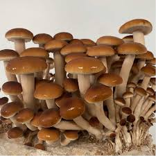

Lions maneIs a gourmet and medicinal mushroom.Multiple proven studies that it promotes neurogenesis (growth of new neurons) and
enhances memory. Reishi Grows in a antler form when grown in a high co2 environment Grows conks when grown with more FAE(fresh air exchange)

Pioppino
The Pioppino mushroom offers a robust, nutty flavor with a slightly chewy texture. It's
ideal for soups, stir-fries, and even gourmet recipes, thanks to its distinct taste that stands out
but doesn't overpower.Cooking is recommended because it breaks down cell walls and enhances their flavor
Studies have shown that Pioppino mushrooms contain a variety of beneficial compounds,
including polysaccharides with antioxidant, anti-aging, and organ-protecting properties.
Additionally, they contain compounds with anti-inflammatory and anti-tumor attributes, as well as
Agrocybin, a peptide with antifungal benefits.
Shiitakes
This is a moderately profitable mushroom that is a little tricky to get right indoors. Its recommended that its grown on logs outside.
To get it right, you have to use low nutrients and cold shock it after curing. It also has
to be kept at a low temperature to ensure curing is done properly. Spores are white, and it is best cooked because it can cause stomach issues in some people
and may have a bitter taste.This is a mushroom that is used in traditional Japanese cooking; however, in recent years,
there has been a decline in Japanese interest in this mushroom.It has an earthy taste and a unique texture. stems are not edible but cant be used in stocks
or dried and powdered